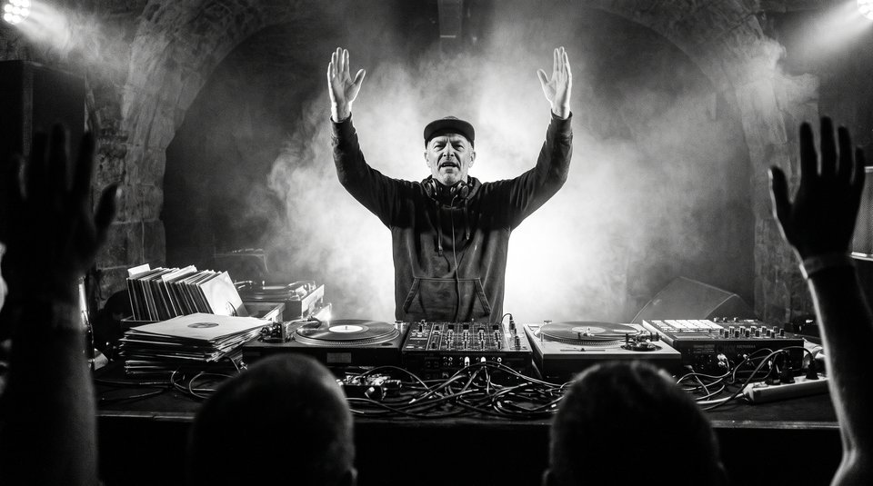

Pseudónimo do baterista e designer de interação portuense que investiga a relação física entre a percussão acústica e a geração de voltagem analógica de controlo (CV).

DJ Warp durante a residência artística no laboratório sonoro da FBAUP (Foto oficial: Drumtiks '26).
Formado em Design de Comunicação pela Faculdade de Belas Artes da Universidade do Porto, o DJ Warp desenvolveu um sistema proprietário que substitui os computadores portáteis e ecrãs por cápsulas piezoelétricas militarizadas montadas diretamente nos tambores acústicos.
Cada batida de baqueta produz um pico elétrico imediato que é enviado para conversores Envelope Follower e Trigger-to-Gate no seu sistema modular Eurorack de 9 unidades de altura (9U), garantindo zero latência perceptiva e uma resposta dinâmica impossível de emular através de software digital.
Manifesto: A Fricção Mecânica do Ritmo
"No momento em que o baterista olha para uma barra de reprodução num ecrã de computador, o ritmo morre. A música eletrónica autêntica nasce da tensão mecânica dos músculos contra a pele do tambor e da conversão direta dessa energia cinética em circuitos analógicos incandescentes."
— DJ Warp, notas da conferência Drumtiks '26 Porto
Especificação Técnica do Live Setup (9U Eurorack)
Lista completa dos componentes de hardware analógico utilizados durante as atuações ao vivo no festival:
Sensores Piezoelétricos de Contacto
Cápsulas seladas em resina epóxi instaladas no interior da tarola e pratos, captando frequências entre 10 Hz e 22 kHz.
Módulo Pré-Amplificador & Envelope Follower
Converte os impulsos de áudio de alta impedância em sinais contínuos de 0 a 10 Volts de voltagem de controlo (CV).
Sintetizador Analógico de Percussão (DFAM)
Osciladores analógicos duplos com gerador de ruído branco analógico e filtro passa-baixo clássico em escada de transístores.
Sequenciador Polimétrico Analógico
Três canais independentes de 8 passos acionados pelo ritmo da baqueta, criando polirritmias a tempos cruzados (3 contra 4 e 5 contra 7).
Mesa de Mistura Analógica & Saída Direct-Out
Processamento estéreo com compressores analógicos VCA e saída balanceada de alta fidelidade para o sistema PA do festival.
Estrutura de Ficheiros & Ativos do Mini-Site
Organização canónica de pastas e ficheiros conforme exigido no enunciado EX2 (Módulo 2 de WD101):
ex2-media-box-model/
├── index.html # Cartaz Gráfico Principal (DJ Warp no Drumtiks '26)
├── about.html # Biografia, Manifesto & Especificações Técnicas (<dl>)
└── assets/
├── css/
│ ├── reset.css # Eric Meyer CSS Reset v2.0 (carregado em 1.º lugar)
│ └── style.css # Folha de Estilos Atomic Design (Tokens, Box Model, Sticky, Media)
├── fonts/
│ ├── Fraunces-VariableFont_SOFT,WONK,opsz,wght.woff2
│ ├── Fraunces-Italic-VariableFont_SOFT,WONK,opsz,wght.woff2
│ ├── Arimo-VariableFont_wght.woff2
│ └── Arimo-Italic-VariableFont_wght.woff2
├── graphics/
│ ├── logo.svg # Logótipo vetorial Drumtiks '26
│ ├── favicon.svg # Favicon institucional
│ ├── check-badge.svg # Indicador de estado SVG
│ └── vinyl-platter.svg # Ícone de disco analógico
├── images/
│ ├── hero-dj-warp-1400w.webp / .jpg # Desktop (≥ 960px)
│ ├── hero-dj-warp-960w.webp / .jpg # Tablet (≥ 600px)
│ ├── hero-dj-warp-600w.webp / .jpg # Mobile (< 600px)
│ ├── dj-warp-960w.webp / .jpg # Retrato de bio
│ ├── alfandega-exterior-dusk-960w.webp / .jpg # Fotografia do recinto
│ └── partner-1..3.svg # Logótipos de parceiros com filtros CSS
└── media/
├── dj-warp-piezo-pulse.mp3 # Áudio analógico de ensaio
└── dj-warp-rehearsal.mp4 # Vídeo demonstrativo ao vivo